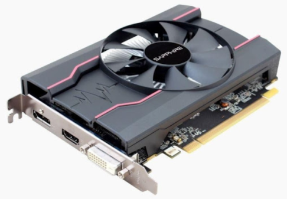

CPU Components
| 1. |

| Memory |
Computer memory stores information, such as data and programs, for immediate use in the computer. |
| 2. |

| Arithmatic Logic Unit |
The arithmetic/logic unit (ALU) handles
all arithmetic operations and logical operations. |
3. |
| Expansion Slots |
Expansion slots are used to add cards that provide additional ports or replace low-performance ports with
higher-performance ports. |
4. |

| Graphics Card |
Graphics card. This is a co-processor, co processors are basically hardware that takes some of the CPU's
tasks and processes the information for the CPU, ... |
5. |
| Hard Drive |
Hard drive. Hard drives are data storage devices used to store files, programs or other information on a
computer system. |
6. |

| Motherboard |
motherboard is the computer's main circuit board. |
7. |

| Power Supply |
Power supply. A power supply provides electricity to all components of a computer system. |
8. |
| Registers |
Registers are small, high-speed memory storage locations within the CPU. |
9. |

| |
|
10. |
| Cooling Fan |
A computer fan is any fan inside, or attached to, a computer case used for active cooling. Fans are used to
draw cooler air into the case from the outside, expel warm air from inside and move air across a heat sink
to cool a particular component. |
11. |
| Case |
A computer case, also known as a computer chassis, is the enclosure that contains most of the hardware of a
personal computer. The components housed inside the case (such as the CPU, motherboard, memory, mass storage
devices, power supply unit and various expansion cards) are referred as the internal hardware, while
hardware outside the case (typically cable-linked or plug-and-play devices such as the display, speakers,
keyboard, mouse and USB flash drives) are known as peripherals. |
12. |
| Control Unit |
A control unit receives data from the user and translates it into control signals that are subsequently
delivered to the central processor. |
13. |
| Ethernet Card |
A general trend in computer hardware is towards integrating the various components of systems on a chip, and
this is also applied to network interface cards. |